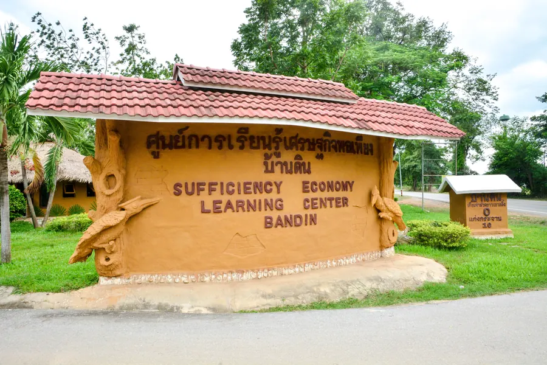
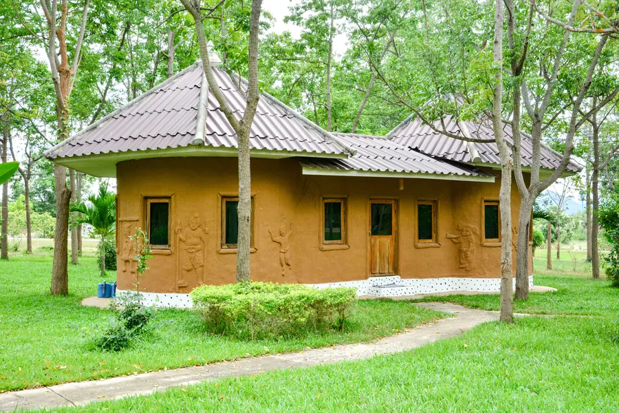
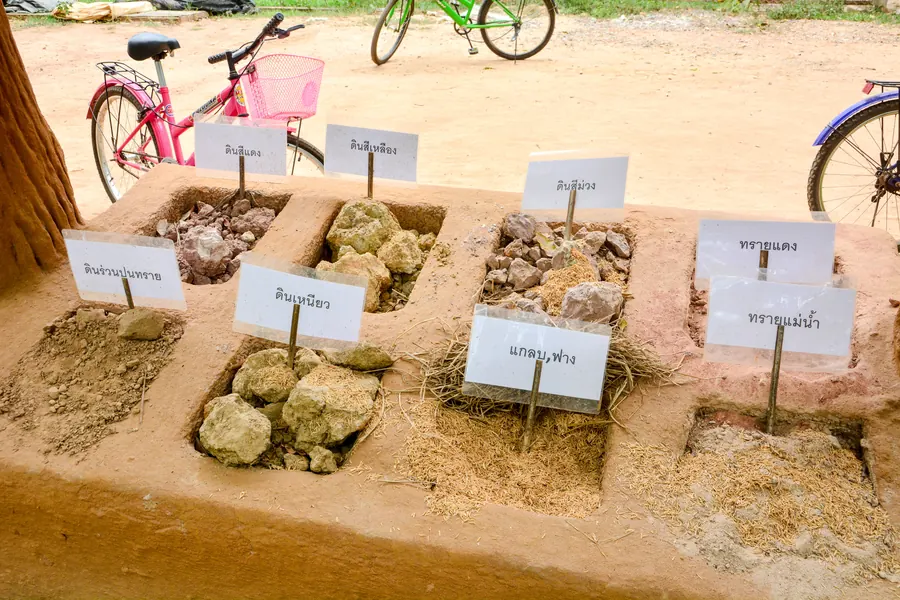
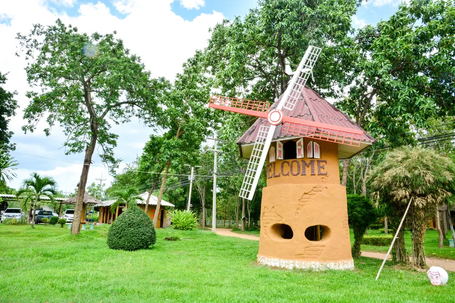
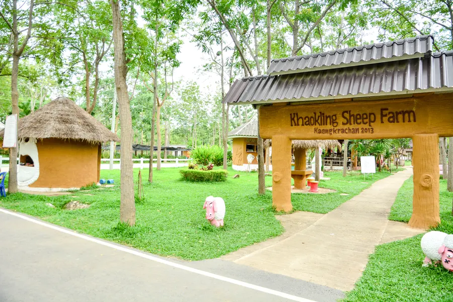

An open farm-style learning center near Khao Kling mountain where visitors discover earth-block building, agriculture, and sufficiency economy — minutes from Natural Healthy Village Kaengkrachan.
About Baan Din
Baan Din (บ้านดิน) is a rehabilitation and learning center for inmates with good conduct, operated in an open farm style rather than a closed prison. Participants learn to build houses with earth blocks and local materials, practice agriculture, and grow their own food — embodying the Sufficiency Economy philosophy of King Rama IX.
The project was built in 2007 following royal directives on sufficiency economy. It is supported by HRH Princess Maha Chakri Sirindhorn.

Sufficiency Economy Learning Center — Baan Din entrance
Location — near NHVK
The center is located at 87 Moo 8, Wangkrai Road, Kaengkrachan, near the turnaround from Phetkasem Road toward Kaengkrachan Lake, close to Khao Kling mountain. Natural Healthy Village Kaengkrachan lies behind Khao Kling mountain — a short drive from this landmark learning center.
Activities for visitors
Families and children are welcome. It is considered safe for family visits — participants are helpful and friendly and explain each activity. Visitors can:
Learn self-sufficiency techniques: agriculture, earth-house building, tree planting, animal breeding
Feed animals and enjoy farm attractions including a sheep farm
See earth-block construction using local raw materials (cereals, earth, sand)

Earth block wall house built with local materials

Materials for earth blocks — earth, sand, and cereals mixed together

Windmill and parking area

Sheep farm attraction
Connection to Natural Healthy Village
NHVK landowners and visitors benefit directly from Baan Din's expertise:
Earth-block techniques learned at Baan Din informed construction methods used at the project
The professor who founded the center and developed plantations with the first generation of participants visited Natural Healthy Village and advised on early land development
NHVK plot owners may request help and manpower from the learning center to build earth-block houses on their plots
The Sufficiency Economy Learning Center is supported by HRH Princess Maha Chakri Sirindhorn and was established in 2007 following King Rama IX's Sufficiency Economy philosophy.
Is it safe to visit with children?
Yes. Families visit regularly. Participants are supervised, friendly, and happy to explain activities. Children can feed animals and explore the farm attractions.
How does this relate to buying land at NHVK?
Natural Healthy Village is a private residential land community behind Khao Kling mountain, near this learning center. The same earth-block and self-sufficiency expertise that shaped Baan Din helped develop NHVK's sustainable infrastructure.
Interested in land near Kaengkrachan? Six plots remain at Natural Healthy Village.